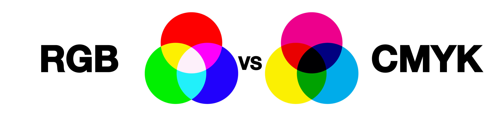

Hoe saai zou een wereld zonder kleur zijn? Kleur op je computer klinkt heel simpel, maar is eigenlijk best gecompliceerd. Wij klikken bijvoorbeeld gewoon op de kleur die we in onze presentatie zouden willen, maar in de computer gaat dit heel anders. In de computer worden namelijk niet alleen letters gecodeerd, maar kleuren ook. Dit gebeurt aan de hand van kleurmodellen. Een laptop bestaat uit onwijs veel pixels(picture elements). Al deze pixels vormen samen een foto. Als je gaat inzoomen zie je de pixels steeds beter. Om het invallende licht op te slaan wordt gebruik gemaakt van kleurmodellen. De 2 die het meest voorkomen zijn het RGB en CYM-model. Het RGB model wordt vooral gebruikt voor afbeeldingen op bijvoorbeeld een laptop, terwijl het CYM-model gebruikt wordt om afbeeldingen te drukken op papier.
Een van de meest gebruikte modellen om kleuren te weergeven is het RGB-model. Als je heel ver gaat inzoomen op je laptop komen er langzaam rijen met 3 kleuren te voorschijn, red, green, blue(RGB). Deze kleuren kunnen allemaal een verschillende sterkte aannemen tussen de 0 en 255. met deze waarde wordt de kleur van de gewenste afbeelding gemaakt. Het RGB-model werkt niet overal hetzelfde. Bij het model vormen de 3 kleuren samen wit, terwijl je bij bijvoorbeeld het mengen van verf een hele andere kleur zou krijgen wanneer je deze 3 kleuren samen mengt. Benieuwd hoe het mengen van kleuren met RGB gaat? klik dan op
deze link.
Er is naast het RGB-model nog een ander model, het CYM-model. We gebruiken dit model tijdens het printen op wit papier, omdat er bij het RGB-model andere kleuren zouden ontstaan als er geprint zou worden op wit papier. Voor dit model worden de kleuren cyaan, geel en magenta gebruikt. deze kleuren kunnen namelijk wel samen een kleur vormen op het witte papier. Deze drie kleuren samen vormen donkergrijs. Als je toch zwart in je afbeelding wilt kan er nog een beetje zwart worden toegevoegd, waardoor het CYMK-model ontstaat. De K staat dan voor Key of Black.
Het woord pixel staat voor picture elements en zijn alle kleine puntjes waaruit een afbeelding is opgebouwd. Op schermen, zoals een laptop zitten onwijs veel van deze pixels die samen een afbeelding vormen. een pixel bestaat uit de kleuren rood, geel en blauw. Deze pixels krijgen hun kleur door de helderheid af te stellen.
Resolutie is het aantal punten of pixels van beelscherm, afbeelding of geprint oppervlak. hoe meer pixels, hoe meer informatie er is de afbeelding is en hoe scherper de afbeelding wordt. 2 belangrijke vormen van resolutie zijn afdrukresolutie en afbeeldingresolutie. De resolutie van beeldschermen wordt uitgedruk in pixels, het word altijd weergeven in de hoeveelheid pixels in de breedte en de hoogte. Je krijgt dan bijvoorbeeld: 1920x1080 Px. Afdrukresolutie wordt vaak uitgedrukt in pixels per inch(ppi). Hoe hoger de afdrukresolutie hoe beter de kwaliteit van de afbeelding zal zijn. Bij het printen wordt vaak gebruikgemaakt van 300 DPI. Dit is de standaard van het printen. Er zijn dan 300 pixels per inch(2,54 cm) op de afbeelding.